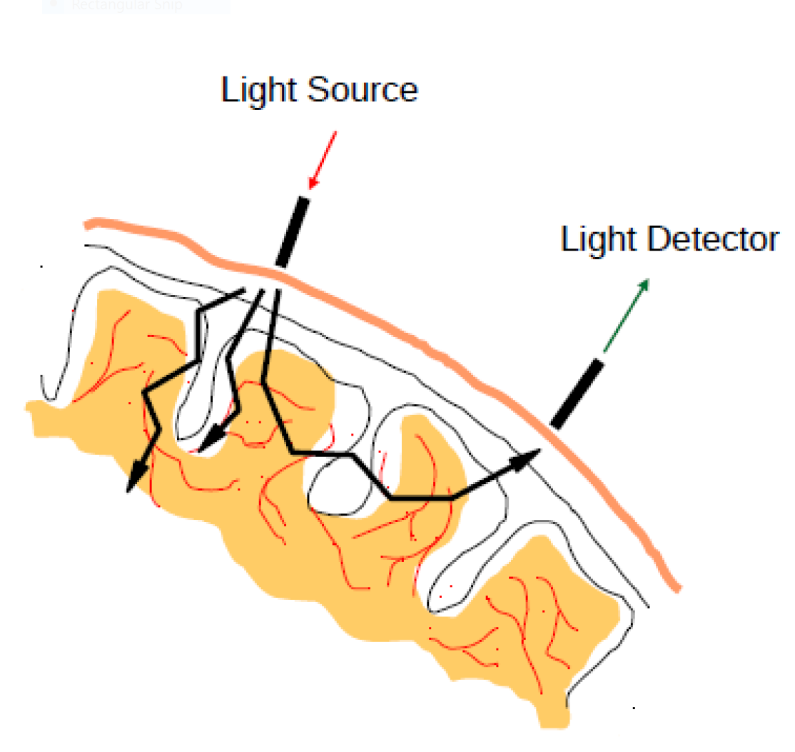
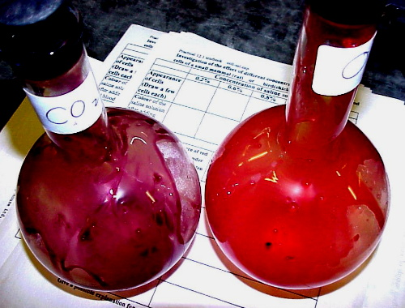

Neural Representation of Interaural Time Differences in Humans – the ITD damping function
Jaime A. Undurraga
2019-07-01
Cocktail-party problem (Cherry, 1953)
How do we recognize what one person is saying when others are speaking at the same time?
When everyone at a well-attended party talks at the same level, the speech of the attended talker at a distance of 0.7 m has a signal-to-noise ratio (SNR) of about 0 dB (the background is as intense as the target talker Plomp 1977). This level is sufficient to give adequate intelligibility for listeners with normal hearing (Miller, 1947).

Auditory scene analysis
A critical role of the auditory system is to parse the inputs from the left and right ears into auditory objects - auditory scene analysis. This is an essential role for survival, recognition, and communication.
Binaural hearing provides cues that allow us to estimate the relative number and location of sources and objects in the environment.
These cues also help us to estimate the dimensions and characteristics of rooms as well as to hear out speakers in the presence of interfering noise.

Grothe et al. (2010)
Which features are conveyed by speech sounds?
- Temporal fine structure (TFS)
- Envelope information (ENV)

Binaural cues
When listening to sounds, we rely on three mechanisms for both sound localization and auditory scene analysis
- Interaural level differences (ILDs)
- Interaural time differences (ITDs)
- Interaural coherence

Temporal fine structure and envelope ITDs

Why ITDs?
- Speech reception thresholds (SRTs) can improve up to 10 dB when sources are separated in space (Hawley et al., 2004).
- Binaural hearing improves tolerance in reverberating environments (Harris and Reitz, 1985)
- Binaural hearing abilities decrease with advancing age (Ross, 2008; 2007, Vercammen et al. 2018).
What about long ITDs?
- Longer ITDs become relevant in reverberation and for integration of multiple sources
- ITDs in the envelope of common amplitude modulation may become the cue for broadband noise stimuli with long ITD (beyond the range for sound localization)
- Robust lateralization has been shown for long ITD of up to 20 ms (only possible below 1500 Hz; (Mossop and Culling, 1998).
EEG Experiments

- Binaural recordings were obtained from 10 NH participants.
- 64 + 2 + 2 channels recording (amplifier: Biosemi ActiveTwo system).
- Fs: 16384 kHz / 24 bits (Low-pass: 3 kHz)
- Denoising source separation (DSS)
- Hottelling T2 test for individual analysis
Neural representation of symmetric ITMs

Neural representation of symmetric ITMs
- ITMs: −0.5/ + 0.5 ms, −1.0/ + 1.0 ms, −1.5/ + 1.5 ms, −2.0/ + 2.0 ms, −2.5/ + 2.5 ms, −3.0/ + 3.0 ms, −4.0/ + 4.0 ms

- Significant effect of the ITM (F(7,56.4) = 6.6, p < 0.001).
Functional near-infrared spectroscopy (fNIRS)
- Neuroimaging technique for measuring brain activity.
- It uses light to measures the change in concentration of haemoglobin in blood: a proxy measure of total local neural activity (similar to fMRI).
  

The brain needs oxygen to function. Blood carries oxygen to the brain as fuel for your neurons.
When a region of the brain requires more energy, additional oxygenated blood is pumped to the area.
As the brain uses oxygen, haemoglobin (carrying O2) gets de-oxygenated (it turns bluish).
fNIRs provides an estimation of oxygenated and de-oxygenated levels which is used as proxy measurement for brain activity.
Results

EEG and fNIRS

Acknowledgments
- Australian Research Council [project number FL160100108]
- Thanks to you for “listening”
Australian Research Council (FL160100108)
Collaborators